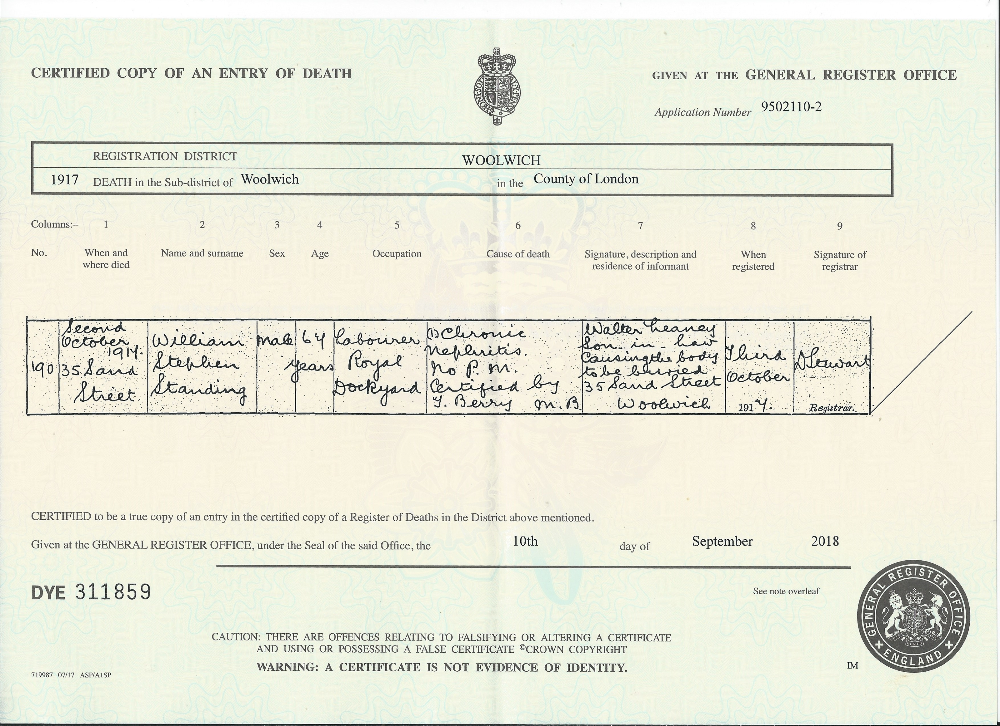
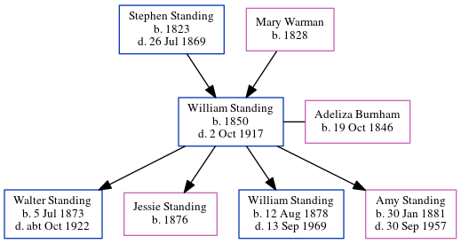

William Stephen Standing 1850 - 1917
[ Home ] | [ Calendar ] | [ Surnames Index ] | [ Census Index ] | [ Family History ]A laundry keeper and the child of Stephen Standing (a laborer) and Mary Warman, William Standing, the second cousin three-times-removed on the father's side of Nigel Horne, was born in Folkestone, Kent, England in 18501,2,3,4,5,6,7 and married Adeliza Burnham (with whom he had 4 children: Walter William, Jessie, William Ernest and Amy Elizabeth) at The Parish Church of St Mary and St Eanswythe, Church Street in Folkestone on Oct 14, 18718 (St. Mary).
During his life, he was living at Fancy Street in Folkestone on Mar 30, 18512 and on Apr 7, 186110; at York Rise, Highgate, London, England on Apr 3, 18814; at Edmund Street, Kettering, Northamptonshire, England on Apr 5, 189111; and at Lansdowne Road, Charlton, London on Mar 31, 19019.
He died on Oct 2, 1917 in Woolwich, London, England5,6 (chronic nephritis).
Parents
- Stephen was born in 1823
- Mary Ann was born in 1828
Children
- Walter William was born on Jul 5, 1873
- Jessie was born in 1876
- William Ernest was born on Aug 12, 1878
- Amy Elizabeth was born on Jan 30, 1881
Citations
- 1851 England Census Online publication - Provo, UT, USA: The Generations Network, Inc., 2005.Original data - Census Returns of England and Wales, 1851. Kew, Surrey, England: The National Archives of the UK (TNA): Public Record Office (PRO), 1851. Data imaged from the National
- 1851 England, Wales & Scotland Census - Findmypast (was age 1 and the son of the head of the household)
- 1861 England Census Online publication - Provo, UT, USA: The Generations Network, Inc., 2005.Original data - Census Returns of England and Wales, 1861. Kew, Surrey, England: The National Archives of the UK (TNA): Public Record Office (PRO), 1861. Data imaged from the National
- 1881 England, Wales & Scotland Census - Findmypast (was age 31 and the head of the household)
- England & Wales deaths 1837-2007 - Findmypast
- England & Wales, Death Index: 1984-2005 Online publication - Provo, UT, USA: The Generations Network, Inc., 2007.Original data - General Register Office. England and Wales Civil Registration Indexes. London, England: General Register Office. © Crown copyright. Published by permission of the Cont
- Kent Marriages And Banns - Findmypast
- Kent Marriages And Banns - Findmypast
- 1901 England, Wales & Scotland Census - Findmypast (was age 53 and the father of the head of the household)
- 1861 England, Wales & Scotland Census - Findmypast (was age 11 and the son of the head of the household)
- 1891 England, Wales & Scotland Census - Findmypast (was age 41 and the head of the household)
Media
William Stephen Standing - death certificate

William Stephen Standing and Adeliza Burnham - marriage certificate

England & Wales deaths 1837-2007 - BMD/D/1917/4/AZ/000849/150
1861 England, Wales & Scotland Census - GBC/1861/0003620800
Kent marriages and banns - GBPRS/CANT/M/97002565/1
Family Tree
Generated by ged2site. Last updated on Jun 11, 2024